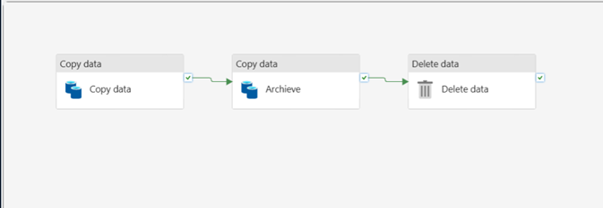
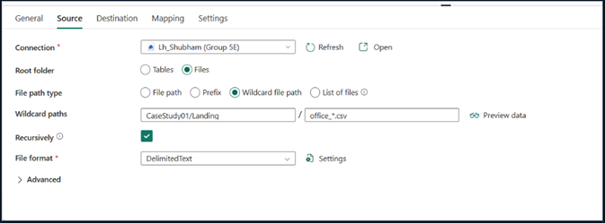
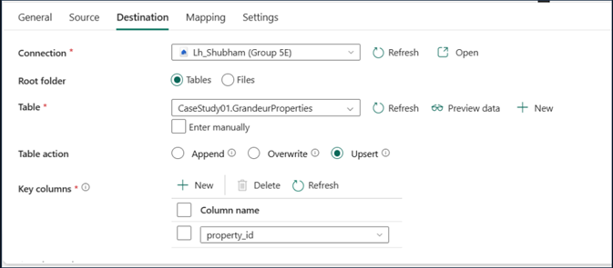
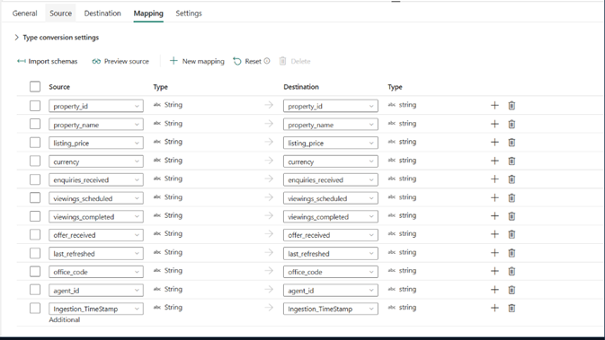

The Global Listing Intelligence Initiative
Microsoft Fabric
Lakehouse Ingestion

System Architecture Diagram
The Business Challenge
Grandeur Properties International faced a critical visibility gap across London, NY, and Dubai. Manual CSV consolidation caused 24-48 hour latency and high error rates, leading to incorrect portfolio decisions during high-value negotiations.
Technical Implementation
Implemented a Lakehouse-centric architecture using a three-activity Microsoft Fabric Pipeline:
- Wildcard Ingestion: Automated nightly capture of office files across multiple regions.
- Upsert Logic: Enforced data integrity using property_id as a unique key.
- Automated Lifecycle: Built a cycle of Ingest $\rightarrow$ Archive $\rightarrow$ Delete to maintain a clean landing zone.
Governance
Managed risk by deploying in stages: Foundation
(Ingest), Integrity (Upsert), and Production scheduling. Ensured that archive failures do not impact data integrity.
Final Impact
Eliminated manual consolidation and provided trusted data by 7:00 AM daily, enabling near real-time action on ultra-luxury assets.
Project Specs
- Platform MS Fabric
- Pattern Lakehouse
Implementation Gallery

Pipeline Flow

Schema Mapping

Archive Process

Landing Zone